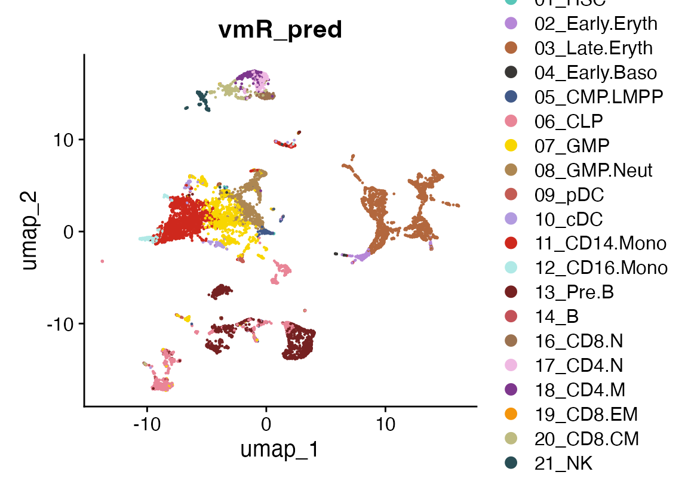
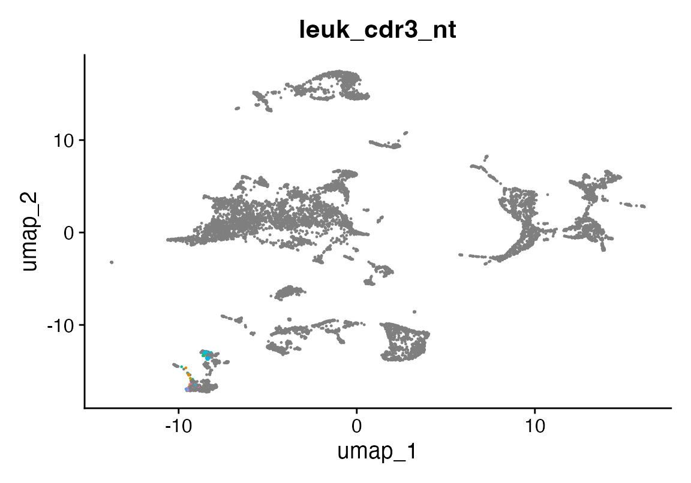
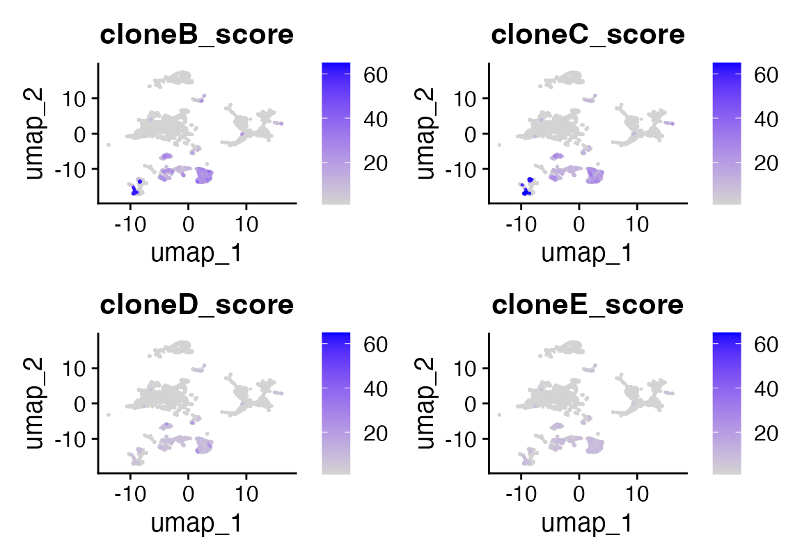
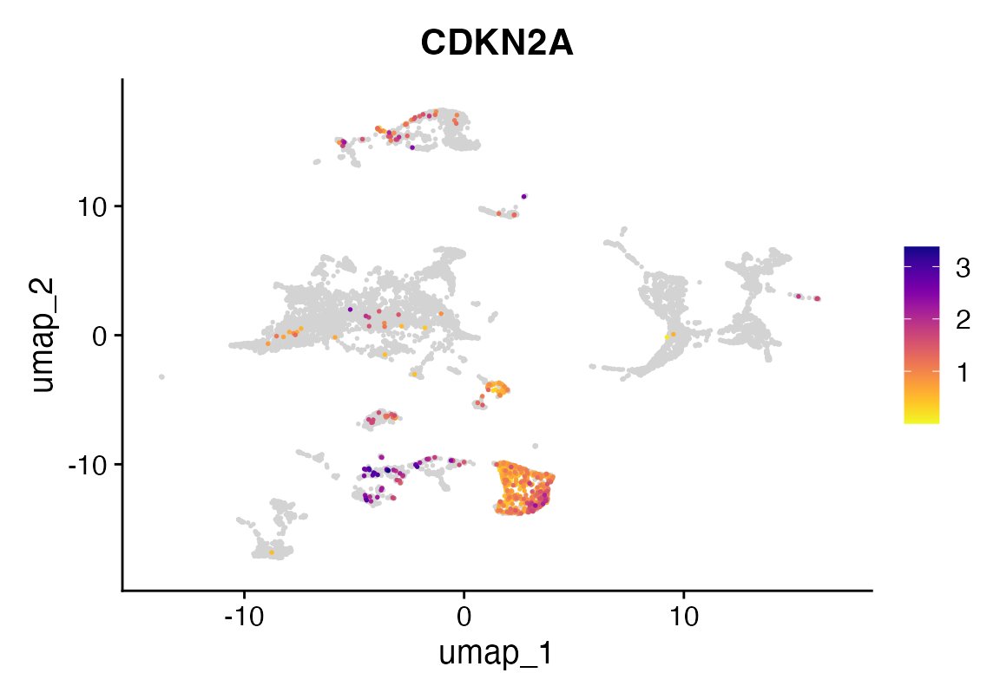

How to perform sequence alignment
2024-06-04
seqAlign.RmdInstalling Rust
First you need to have an updated Rust installation. Go to this site to learn how to install Rust.
Installing rustytools
You will need to have the devtools package installed…
devtools::install_github("furlan-lab/rustytools", force=T)Running a tool to perform sequence alignment
Loading libraries
rm(list=ls())
suppressPackageStartupMessages({
library(rustytools)
})Fast pairwise alignment
Using rust we have implemented an excellent pairwise alignment algorith from the rust bio package written by Johannes Köster, Vadim Nazarov, and Patrick Marks. We can quickly perform a pairwise alignment from all the VDJ-B sequences from 10X with the adaptive clonoseq values obtained from a patient with suspected relapse of B-ALL. The align function allows use to score the sequence similarity. Using this approach we can easily identify the leukemic clones in the UMAP embedding.
We also see that these cells do not express CDKN2A unlike the healthy lymphod precursors, consistent with the clinical results.
library(Seurat)
library(scCustomize)
seu<-readRDS("/Users/sfurlan/Library/CloudStorage/OneDrive-SharedLibraries-FredHutchinsonCancerCenter/Furlan_Lab - General/experiments/patient_marrows/ALL_5336/cds/240416_cds.RDS")
if(grepl("^gizmo", Sys.info()["nodename"])){
ROOT_DIR2<-"/fh/fast/furlan_s/grp/data/ddata/BM_data"
} else {
ROOT_DIR2<-"/Users/sfurlan/Library/CloudStorage/OneDrive-SharedLibraries-FredHutchinsonCancerCenter/Furlan_Lab - General/datasets/Healthy_BM_greenleaf"
}
#reference dataset
seur<-readRDS(file.path(ROOT_DIR2, "230329_rnaAugmented_seurat.RDS"))
DimPlot(seu, group.by = "vmR_pred", cols = seur@misc$colors)
#DimPlot(seu, group.by = "seurat_clusters", cols= as.character(pals::polychrome()))
seu$leuk_cdr3_nt<-NA
seu$leuk_cdr3_nt[seu$seurat_clusters %in% c(11,13)]<-seu$cdr3_nt[seu$seurat_clusters %in% c(11,13)]
DimPlot(seu, group.by = "leuk_cdr3_nt")+NoLegend()
putative<-names(table(seu$leuk_cdr3_nt)[order(-table(seu$leuk_cdr3_nt))])
#from adaptive clonoseq
cloneC<-"CAGGAACACCTCCATAAGCACAGCCTACATGGAGCTGAGCAGCCTGAGATCTGAGGACACGGCCGTGTATTACTGTGCGAGAGGCCTAACCCACACCCACCCCCTACTTATTGTAGTAGTACCAGCTGCTATGACTACTGGGGCCAGGGAACC"
cloneB<-"CGCGGACAAATCCACGAGCACAGCCTACATGGAGCTGAGCAGCCTGAGATCTGAGGACACGGCCGTGTATTACTGTGCGCGGCGGACTCCGTATTACTATGGTTCGGGGAGTTATACTACTACGGTATGGACGTCTGGGGCCAAGGGACC"
cloneD <- "GATGTTGGGGTTTATTACTGCATGCAAGGTACACACTGGCCCAACCTAGTGGCAGCCCAGGG"
cloneE <- "CTGATTATTACTGTGAGACCGGGACCAAGC"
seu$cloneC_score<-sapply(seu$cdr3_nt, function(seq) align(seq, cloneC, atype = "local", verbose = F))
seu$cloneB_score<-sapply(seu$cdr3_nt, function(seq) align(seq, cloneB, atype = "local", verbose = F))
seu$cloneD_score<-sapply(seu$cdr3_nt, function(seq) align(seq, cloneD, atype = "local", verbose = F))
seu$cloneE_score<-sapply(seu$cdr3_nt, function(seq) align(seq, cloneE, atype = "local", verbose = F))
FeaturePlot(seu, features = c("cloneB_score", "cloneC_score", "cloneD_score", "cloneE_score"), order = T, keep.scale="all", cols = c("grey90", "red"), min.cutoff = "q20")
Biostrings::pairwiseAlignment(putative[1], cloneC, type="global-local")## Global-Local PairwiseAlignmentsSingleSubject (1 of 1)
## pattern: TGTGCGAGATCAGAGAGGCCTAACCCACACCC...TTGTAGTAGTACCAGCTGCTATGACTACTGG
## subject: [74] TGTGCGAGA-------GGCCTAACCCACACCC...TTGTAGTAGTACCAGCTGCTATGACTACTGG
## score: 96.75946
Biostrings::pairwiseAlignment(putative[2], cloneB, type="global-local")## Global-Local PairwiseAlignmentsSingleSubject (1 of 1)
## pattern: TGTGCGAGCTCAGGGGTATACCAC-----GCG...GGAGTTATACTACTACGGTATGGACGTCTGG
## subject: [50] TCTGAGGACACGGCCGTGTATTACTGTGCGCG...GGAGTTATACTACTACGGTATGGACGTCTGG
## score: 49.77611
FeaturePlot_scCustom(seu, features = "CDKN2A")
Appendix
## R version 4.4.3 (2025-02-28)
## Platform: aarch64-apple-darwin20
## Running under: macOS Sequoia 15.4.1
##
## Matrix products: default
## BLAS: /Library/Frameworks/R.framework/Versions/4.4-arm64/Resources/lib/libRblas.0.dylib
## LAPACK: /Library/Frameworks/R.framework/Versions/4.4-arm64/Resources/lib/libRlapack.dylib; LAPACK version 3.12.0
##
## locale:
## [1] en_US.UTF-8/en_US.UTF-8/en_US.UTF-8/C/en_US.UTF-8/en_US.UTF-8
##
## time zone: America/Los_Angeles
## tzcode source: internal
##
## attached base packages:
## [1] stats graphics grDevices utils datasets methods base
##
## other attached packages:
## [1] scCustomize_3.0.1 Seurat_5.2.1 SeuratObject_5.0.2 sp_2.2-0
## [5] rustytools_0.0.2
##
## loaded via a namespace (and not attached):
## [1] RColorBrewer_1.1-3 shape_1.4.6.1 rstudioapi_0.17.1
## [4] jsonlite_2.0.0 magrittr_2.0.3 ggbeeswarm_0.7.2
## [7] spatstat.utils_3.1-3 farver_2.1.2 rmarkdown_2.29
## [10] GlobalOptions_0.1.2 fs_1.6.5 zlibbioc_1.52.0
## [13] ragg_1.4.0 vctrs_0.6.5 ROCR_1.0-11
## [16] spatstat.explore_3.4-2 paletteer_1.6.0 janitor_2.2.1
## [19] forcats_1.0.0 htmltools_0.5.8.1 sass_0.4.9
## [22] sctransform_0.4.1 parallelly_1.43.0 KernSmooth_2.23-26
## [25] bslib_0.9.0 htmlwidgets_1.6.4 desc_1.4.3
## [28] ica_1.0-3 plyr_1.8.9 lubridate_1.9.4
## [31] plotly_4.10.4 zoo_1.8-14 cachem_1.1.0
## [34] igraph_2.1.4 mime_0.13 lifecycle_1.0.4
## [37] pkgconfig_2.0.3 Matrix_1.7-3 R6_2.6.1
## [40] fastmap_1.2.0 snakecase_0.11.1 GenomeInfoDbData_1.2.13
## [43] fitdistrplus_1.2-2 future_1.40.0 shiny_1.10.0
## [46] digest_0.6.37 colorspace_2.1-1 rematch2_2.1.2
## [49] patchwork_1.3.0 S4Vectors_0.44.0 tensor_1.5
## [52] RSpectra_0.16-2 irlba_2.3.5.1 textshaping_1.0.0
## [55] GenomicRanges_1.58.0 labeling_0.4.3 progressr_0.15.1
## [58] timechange_0.3.0 spatstat.sparse_3.1-0 httr_1.4.7
## [61] polyclip_1.10-7 abind_1.4-8 compiler_4.4.3
## [64] withr_3.0.2 fastDummies_1.7.5 MASS_7.3-65
## [67] tools_4.4.3 vipor_0.4.7 lmtest_0.9-40
## [70] beeswarm_0.4.0 httpuv_1.6.15 future.apply_1.11.3
## [73] goftest_1.2-3 glue_1.8.0 nlme_3.1-168
## [76] promises_1.3.2 grid_4.4.3 Rtsne_0.17
## [79] ade4_1.7-23 cluster_2.1.8.1 reshape2_1.4.4
## [82] generics_0.1.3 seqinr_4.2-36 gtable_0.3.6
## [85] spatstat.data_3.1-6 tidyr_1.3.1 data.table_1.17.0
## [88] XVector_0.46.0 BiocGenerics_0.52.0 spatstat.geom_3.3-6
## [91] RcppAnnoy_0.0.22 ggrepel_0.9.6 RANN_2.6.2
## [94] pillar_1.10.2 stringr_1.5.1 ggprism_1.0.5
## [97] spam_2.11-1 RcppHNSW_0.6.0 later_1.4.2
## [100] circlize_0.4.16 splines_4.4.3 dplyr_1.1.4
## [103] lattice_0.22-7 survival_3.8-3 deldir_2.0-4
## [106] tidyselect_1.2.1 Biostrings_2.74.1 miniUI_0.1.1.1
## [109] pbapply_1.7-2 knitr_1.50 gridExtra_2.3
## [112] IRanges_2.40.1 scattermore_1.2 stats4_4.4.3
## [115] xfun_0.52 matrixStats_1.5.0 stringi_1.8.7
## [118] UCSC.utils_1.2.0 lazyeval_0.2.2 yaml_2.3.10
## [121] evaluate_1.0.3 codetools_0.2-20 tibble_3.2.1
## [124] cli_3.6.4 uwot_0.2.3 pbmcapply_1.5.1
## [127] xtable_1.8-4 reticulate_1.42.0 systemfonts_1.2.2
## [130] munsell_0.5.1 jquerylib_0.1.4 Rcpp_1.0.14
## [133] GenomeInfoDb_1.42.3 globals_0.16.3 spatstat.random_3.3-3
## [136] png_0.1-8 ggrastr_1.0.2 spatstat.univar_3.1-2
## [139] parallel_4.4.3 pkgdown_2.1.1 ggplot2_3.5.2
## [142] dotCall64_1.2 pwalign_1.2.0 listenv_0.9.1
## [145] viridisLite_0.4.2 scales_1.3.0 ggridges_0.5.6
## [148] crayon_1.5.3 purrr_1.0.4 rlang_1.1.6
## [151] cowplot_1.1.3